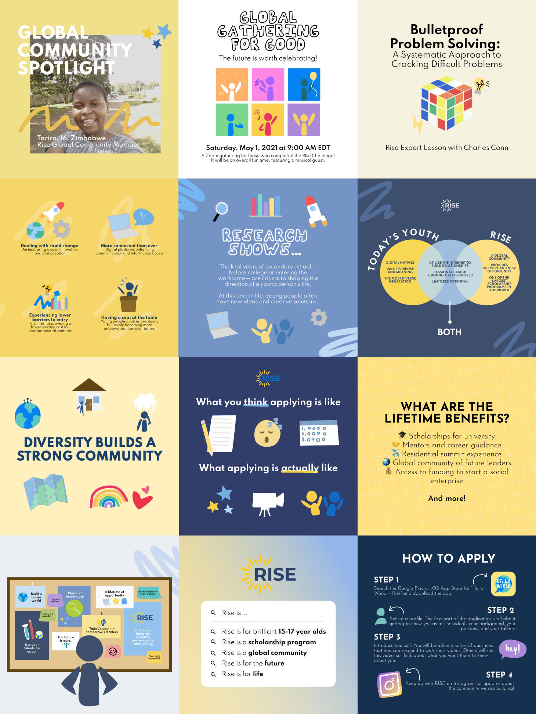

💫 “How do you reach talented teenagers on social media?”
December 2020 - Present
(Initially 3 weeks)
Graphic Designer
Julia Terpak
Stan Rozenbilt
Danny Vogwill
Grace Lin
Consultants
RISE is a program for 15-17 year olds that offers lifetime benefits (scholarships, mentorship, career development,
funding) to support program participants to work towards solving global issues.
I was connected to this project through JUV Consulting, a digital marketing agency that works with clients to engage younger target audiences.
In December 2020, at the start of the project, RISE did not have an established visual brand , which made it
hard for individuals interested in the program to keep up with RISE branded content. Additionally, at the time,
RISE was a new program and wasn't well-known among its target audience.
I was onboarded to the project through JUV Consulting and tasked with designing a visual identity, as well as social media posts in line with the identity that I designed, that would be implemented into RISE’s social media pages to establish a visual brand for the organization, and to attract more social media users to keep up with RISE’s content.
As soon as I was given the task, I knew I planned to incorporate popular design trends into the content I
created - working towards bold colors and placing an emphasis on including illustrations.
Working for a Generation Z culture centric company, my project's leadership and consultants placed an emphasis
on creating social media content that was both visually appealing to teenagers and was easily reshareable and
applicable to today's youth. Some inspiration for posts that they highlighted were very visual heavy,
infographic-esque content.
Overall, the project managers I worked with wanted a brand that was gen-z focused, playful in a sense, but
wasn't too childish.


I was tasked with creating 3 sample posts that promoted our first campaign, which intended
to introduce the program and generate interest in the program.
My initial approach was to create graphics that had properties that our marketing consultants recommended:
Ultimately, the RISE team ended up incorporated a mix of our ideas into our graphics, because
we believed these themes best represented and reached our target audience . We did not have
an established style guide when RISE first began posting, as the project was only meant to last for a short timeframe and
my main deliverables were to create individual posts that didn't rely on a guide.
When our contract with RISE got extended and I created more posts, the brand evolved to become more established.
We onboarded another graphic designer (shoutout to Grace Lin!) to the team to make more posts at a faster rate, and I
made a style guide for her to reference, which is displayed below.


RISE has received higher engagement on posts. Instagram likes had increased by 300% within the first 3 weeks of releasing new content!
Their Instagram page has grown from 700 followers (December 2020) to 5,500 as of June 2021.
Here are my favorite RISE posts, as well as posts that have stretched me as a visual designer!
Probably one of my biggest flexes as a graphic designer is that my work with RISE has been promoted in collaboration with the Shawn Mendes foundation, and I got to make a post for them. You can check out the post here!
RISE changed its theme and style in October 2021 to begin promotion of the second year of their primary program: RISE's Global Winners.
I still design posts promoting the program through JUV Consulting.